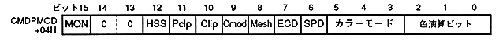

HSS | Process |
0 | High-speed shrink disabled |
1 | High speed shrink enabled |
Pclp | Process |
0 | Pre-clipping with left / right inversion |
1 | No pre-clipping, left / right inversion: TD |
Clipping mode bit: Clipping mode bit (Cmod), bit 9
Clip | Cmod | User Clipping processing |
0 | 0 | User clipping disabled |
0 | 1 | Setting prohibited (Do not set) ) |
1 | 0 | Inner drawing mode |
1 | 1 | Outer drawing mode |
Mesh | Mesh enabled |
0 | Draw without mesh processing |
1 | Mesh processing and drawing drawing |